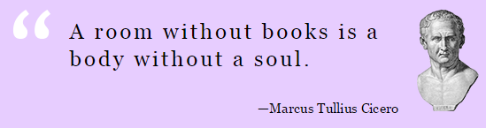

Project Cicero NNJ is an annual non-profit book drive designed to create and supplement classroom libraries in under-resourced New Jersey public schools.
Each year, schools in Northern New Jersey host book collections. The books donated are for ages pre-school through 12th grade with strict requirements that they are in new or excellent condition. Trucks pick up the books from the donor schools and take them to the site of the book distribution where there are hundreds of student, parent, and teacher volunteers ready to sort and display the books. The next day, approximately 250 teachers come to the school with rolling suitcases and choose whichever books they want for their classrooms for free.
Project Cicero NNJ is operated by Turn the Page NNJ, Inc., a 501(c)3 nonprofit organization, and works in partnership with public, parochial, and independent schools. The book drive is modeled after the program innovated in New York City in 2001. The name Project Cicero NNJ is licensed from the New York Society Library which operates Project Cicero New York City, but is otherwise unrelated to Project Cicero NNJ.
BOOK DRIVE
The next Project Cicero book distribution event will take place on [March 11, 2017].
Volunteers: Check this space in January 2017 to register as a volunteer.
Teachers: Check this space in February 2017 for registration information.

Project Cicero NNJ is named in honor of the Roman writer, statesman, orator and philosopher, Marcus Tullius Cicero, who created extensive libraries in the first century B.C.E.